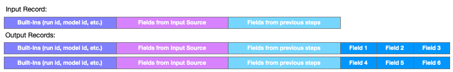
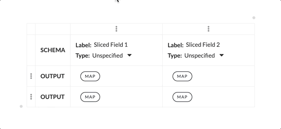

Slice Step
This step splits the current record into two or more records by reorganizing the flat sequence of input fields into new records. During the course of processing, the the append of result values can produce single records that contain multiple logical records; the slice step allows these to be extracted for output or further transformation. The sliced fields can reference any field available in the input, regardless of source. This step emits multiple records to the next step for each record the step receives.
Configuration
To configure a slice step, the structure (labels and data types) of the "new" records must be constructed. When a slice step is added, a grid with columns and rows is presented. This grid can be changed: columns and rows can be added or removed.
- Define the Schema - this is the column, label and type information.
- Define the Output - map values from the original record into new records. The data must conform to the number and types of columns defined above.
See also: About Stage Steps